Co-op Commander Guide: Swann
Chief Engineer
Sections on this Page
Commander Summary
Swann relies on mechanical units, backed up with a powerful laser drill to control the battlefield.

Level Unlocks
| Level/Icon | Name | Description |
|---|---|---|
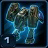 |
Vehicle Specialist | Swann builds SCV's, vehicles and starships 20% faster than other Commanders. Factories and Armories do not cost vespene gas. |
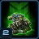 |
Combat Drop | Unlocks the ability to calls down 4 A.R.E.S. War Bots with timed life, stunning enemy units in the target area upon arrival. Call down the Combat Drop from the top panel. |
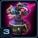 |
Betty and the Gang |
Increases the attack range of Devastation Turrets from 6 to 9. Attacks now slow enemy movement speed by 30%. Increases the life of Missile Turrets from 250 to 325. Attacks now deal area damage. Reduces the cost of Perdition Turrets by 50%. |
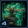 |
Drakken Laser Drill: Pulse Cannon |
The Drakken laser drill can now be upgraded a second time, increasing its attack damage from 30 to 50. Also unlocks the Pulse Cannon ability, which deals 600 damage to all enemy units and structures in the target area. Activate the Pulse Cannon ability from the top panel. |
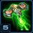 |
Vespene Harvester | Unlocks the ability for Command Centers to call down automated harvesters that gather extra vespene from your Refineries or your ally's vespene-gathering structures. 2 gas for each player every 6.3 seconds. |
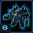 |
New Unit: Thor |
Heavy assault mech. Built at the Factory. Can attack ground and air units. |
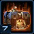 |
Factory Upgrade Cache |
Unlocks the following upgrades at the Factory Tech Lab:
|
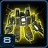 |
Improved SCVs | Allows multiple SCVs to build a structure in tandem, reducing its construction time. Repairing no longer costs resources. |
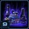 |
Armory Upgrade Cache |
Unlocks the following upgrades at the Armory:
|
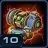 |
Tech Reactors | Combines Tech Labs and Reactors into a single add-on which contains upgrades for units while also allowing two units to be built simultaneously. |
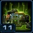 |
Engineering Bay Upgrade Cache |
Unlocks the following upgrades at the Engineering Bay:
|
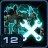 |
Immortality Protocol | Unlocks the ability for destroyed Thors and Siege Tanks to rebuild themselves on the battlefield. |
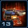 |
Starport Upgrade Cache |
Unlocks the following upgrades at the Starport Tech Reactor:
|
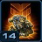 |
Six for the Price of Four | Increases the number of A.R.E.S. War Bots called down by Combat Drop from 4 to 6. Call down the Combat Drop from the top panel. |
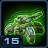 |
Mechanical Know-how | Increases the life of Swann's SCVs, vehicles, and starships by 20%. |
Highlighted rows denote large power spikes for the commander.
Achievements
The commander-specific achievements for Swann are:
| Achievement | Name | Description |
|---|---|---|
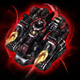 |
Combat Ready | Kill 25 units with Swann's Combat Drop before they expire on Hard difficulty. |
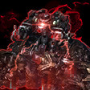 |
Drop 'Em Dead | Kill 250 enemy units with Swann's Combat Drop in Co-op Missions. |
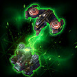 |
Smooth Operator | Harvest 100,000 Vespene Gas for your ally with Rory Swann's Vespene Harvester in Co-op Missions. |
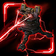 |
The Power of the Sun at Your Fingertips | Deal 20,000 damage in a single mission with Swann's Drakken Laser Drill on Hard difficulty. |
Calldowns
The calldowns for Swann, at level 15, with no mastery points added are:
| Calldown | Name | Description | Recommended Usage | Numbers |
|---|---|---|---|---|
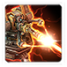 |
Drakken Laser Drill Attack | Attack with the Drakken Laser Drill. Deals 20 damage per second and has unlimited range. |
|
|
 |
Concentrated Beam | Requirements: Drakken Laser Drill Level 1 Deals 400 damage to enemy units and structures in a line across the entire map. |
|
|
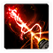 |
Pulse Cannon | Requirements: Drakken Laser Drill Level 2 Deals 600 damage to enemy units and structures in the target area. |
|
|
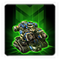 |
Combat Drop | Calls down 6 A.R.E.S. War Bots, stunning enemy ground units in the drop zone. The War Bots are controllable and fight for 60 seconds. |
|
|
Sub-Ascension Leveling
Difficulty: Moderate
Swann plays the same way he does at Ascension levels when he is at lower levels. However, he is significantly slower to ramp up and build his army. In the early game, build a Commander Center next to your rocks, as it will take time for it to be built by a single SCV. Build four Factories in the later stages of the game, two with Tech Labs and two with Reactors to build your endgame armies.
While leveling through Mastery levels, allocate points into Power Set 1's Concentrated Beam Width mastery until you hit the desired number of points, before allocating them to the Combat Drop duration mastery. Allocate points with an equal split on Power Set 3.
Masteries
Below are the three Power Sets for Swann with the recommended point allocations for each. Note that these are meant to serve a general, all-purpose build that is effective across all maps with no Prestiges selected. You are highly encourged to change these masteries to suit your playstyle and particular challenges you face (e.g. Weekly Mutations).
Power Set 1:
| Power | Value | Recommended Points to Add | Further Considerations |
|---|---|---|---|
| Concentrated Beam Width and Damage | 2% per point 60% maximum |
19 | Players that prefer to rely on their Combat Drops to tank for their main army should consider adding more points into that respective mastery. The Combat Drops can severely reduce the amount of damage their army takes. |
| Combat Drop Duration and Life | 2% per point 60% maximum |
11 |
The 19 points into the Concentrated Beam mastery ensures you can 1-shot Battlecruisers with the ability.
Power Set 2:
| Power | Value | Recommended Points to Add | Further Considerations |
|---|---|---|---|
| Immortality Protocol Cost and Build Time | -2% per point -60% maximum |
? | Immortality Protocol can be critical to ensuring Swann is able to keep up with the eventual losses his army will take as the game progresses. However, it only applies to certain units, and it is important for a player to determine whether they will benefit from Immortality Protocol more than they will benefit from increased structure health. |
| Structure Health | 2% per point 60% maximum |
? |
This is down to player preference. If you tend to rely more on Siege Tanks and Thors, then the Immortality Protocol mastery should be chosen, otherwise, the Structure Health is a better option, especially when relying on static defenses.
Power Set 3:
| Power | Value | Recommended Points to Add | Further Considerations |
|---|---|---|---|
| Vespene Drone Cost | -3% per point -90% maximum |
? | Early Vespene Harvesters can provide Swann with the much-needed gas that he needs to get some of his higher-tech units out earlier. However, the Laser Drill mastery will allow the player to have a much more global presence on the map, allowing them to tech up to their end-game build without the constant harassment of attack waves. It is up to the player to determine which mastery/what ratio of mastery points to allocate for this. |
| Laser Drill Build Time, Upgrade Time, and Upgrade Cost | -1.5% per point -45% maximum |
? |
The regular choice is the Vespene Drone Cost mastery. However, for more mineral-heavy builds, and builds that rely on the Laser Drill, the Laser Drill mastery is the preferred choice.
Prestiges
Below are the prestiges for Swann. Note that "Effective Level" is the level at which the prestige achieves it full effect.
| Level | Name | Description | Effective Level | Notes |
|---|---|---|---|---|
| 1 | Heavy Weapons Specialist |
|
1 |
|
| This prestige, by itself, is not very useful. While it does compound really well with Vorazun's Black Hole, the hit-and-run strategy for Swann isn't particularly effective. Commanders that can provide global map vision (e.g. Stetmann's Stetellites, Zeratul's Xel'Naga Watchers, Kerrigan's Creep Tumors or Nydus Worms) can help Swann get a little more mileage out of this Prestige by allowing him to deal with attack waves without the use of calldowns. | ||||
| Level | Name | Description | Effective Level | Notes |
|---|---|---|---|---|
| 2 | Grease Monkey |
|
11 |
|
| This prestige makes Swann's already-powerful turrets even more powerful by further increasing their armor, attack speed and range. It should be a go-to pick for any defense-specific scenarios. | ||||
| Level | Name | Description | Effective Level | Notes |
|---|---|---|---|---|
| 3 | Payload Director |
|
1 | None |
| The extreme amount of burst damage this Prestige can provide may, at-first-glance, seem valuable in addition to the ability to not only Tactical Jump your damage dealers but also your detection and healer. However, with proper micro, players should not be losing Siege Tanks to enemy units, especially with a Goliath frontline combined with Science Vessel Defense Matrices. Additionally, the disadvantage of having longer cooldowns on the Drill abilities means that the abilities do not sync up with mission attack wave/event timings as well. | ||||
For general play, playing without a Prestige Talent selected is recommended, as none of the Prestige Talents available to Swann provide him with a solution to problem he cannot already overcome by proper play.
Recommended Army Composition
The recommended army composition for Swann is below. Note that this assumes no Prestige talent selected and recommended Mastery Allocations. This is a basic recommendation for your army framework. It is recommended to gain an understanding for each of the units in the Units section and further add tech units so that you are able to better handle the situations you face.
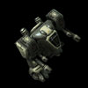

Mass Goliath builds can do fairly well in most situations, as Science Vessels can give Goliaths not only healing, but protective Defensive Matrices.
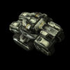
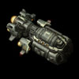
Add a Hercules with 8 sieged up Siege Tanks and drop them behind your line of Goliaths for powerful splash damage.
Combat Units
For more information on Swann's unit stats, comparison between units and upgrade calculations, visit the Data Tables page.
Swann's combat units are listed below:
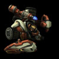
Hellbat
- Generally not worth making due to the poor HP.
- Can be used as a frontline, but not very viable.
Skills: None
Upgrades:
| Upgrade | Name | Effect |  / / |
Research Time |
|---|---|---|---|---|
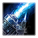 |
Infernal Pre-Igniter | Hellbats deal +10 damage to light units in both modes. | 100/100 | 60 seconds |
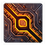 |
Infernal Plating | Hellions and Hellbats gain +2 armor. | 100/100 | 60 seconds |
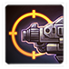 |
Advanced Optics | Increases the range of all vehicle and ship weapons by 1. | 150/150 | 120 seconds |
| Regenerative Bio-Steel | Vehicles and ships automatically heal themselves over time. | 150/150 | 90 seconds |
Hellion
- Generally not worth making due to the poor HP.
- Has good mobility to allow you to get vision of areas of the map.
Skills: None
Upgrades:
| Upgrade | Name | Effect | / |
Research Time |
|---|---|---|---|---|
| Infernal Pre-Igniter | Hellbats deal +10 damage to light units in both modes. | 100/100 | 60 seconds | |
| Infernal Plating | Hellions and Hellbats gain +2 armor. | 100/100 | 60 seconds | |
| Advanced Optics | Increases the range of all vehicle and ship weapons by 1. | 150/150 | 120 seconds | |
| Regenerative Bio-Steel | Vehicles and ships automatically heal themselves over time. | 150/150 | 90 seconds |
Goliath
- Great all-purpose unit.
- Can target both, enemy ground and air units with the "Multi-Lock Weapons System" upgrade.
- Does great anti-air DPS.
- Slightly fragile, and will need micro to move weakened ones out of danger.
Skills: None
Upgrades:
| Upgrade | Name | Effect | / |
Research Time |
|---|---|---|---|---|
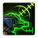 |
Ares-Class Targeting System | Increases the Goliath's anti-air weapon range by 3 and its ground weapon range by 1. | 100/100 | 60 seconds |
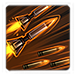 |
Multi-Lock Weapons System | Goliaths can target and attack ground and air units simultaneously. | 150/150 | 90 seconds |
| Advanced Optics | Increases the range of all vehicle and ship weapons by 1. | 150/150 | 120 seconds | |
| Regenerative Bio-Steel | Vehicles and ships automatically heal themselves over time. | 150/150 | 90 seconds |
Siege Tank
- Powerful defensive unit.
- Can be used offensively with the Hercules.
Skills: None
Upgrades:
| Upgrade | Name | Effect | / |
Research Time |
|---|---|---|---|---|
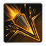 |
Maelstrom Rounds | Siege Tanks gain +40 attack damage while in Siege Mode. Splash damage remains the same. | 100/100 | 60 seconds |
| Advanced Optics | Increases the range of all vehicle and ship weapons by 1. | 150/150 | 120 seconds | |
| Regenerative Bio-Steel | Vehicles and ships automatically heal themselves over time. | 150/150 | 90 seconds |
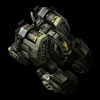
Cyclone
- Can kite enemy units, making it effective for single-target DPS.
- Relatively ineffective, as most attack waves have several units with low HP.
- Very fragile.
Skills:
| Skill | Name | Description | Cooldown | Energy Cost |
|---|---|---|---|---|
| Lock On | Locks the Cyclone's weapons on the target unit, dealing 500 damage over 20 seconds. Can move while firing. Cancels if target moves out of range. | 6 seconds | 0 |
Upgrades:
| Upgrade | Name | Effect | / |
Research Time |
|---|---|---|---|---|
| Targeting Optics | Increases Cyclone Lock On range by 3. | 100/100 | 60 seconds | |
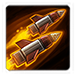 |
Mag-Field Accelerator | Increases Cyclone Lock On damage by 100%. | 100/100 | 90 seconds |
| Advanced Optics | Increases the range of all vehicle and ship weapons by 1. | 150/150 | 120 seconds | |
| Regenerative Bio-Steel | Vehicles and ships automatically heal themselves over time. | 150/150 | 90 seconds |
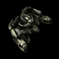
Thor
- Draws a lot of enemy aggro.
- Can body block each other, so if using Thors, make them in small quantities.
- Does great anti-ground DPS.
Skills:
| Skill | Name | Description | Cooldown | Energy Cost |
|---|---|---|---|---|
 |
330mm Barrage Cannon | Stuns all enemies in a small area. Deals 500 damage over 3 seconds in a larger area. | 60 seconds | 0 |
Upgrades:
| Upgrade | Name | Effect | / |
Research Time |
|---|---|---|---|---|
| 330mm Barrage Cannon | Allows Thors to use the 330mm Barrage Cannon ability. | 100/100 | 60 seconds | |
| Advanced Optics | Increases the range of all vehicle and ship weapons by 1. | 150/150 | 120 seconds | |
| Regenerative Bio-Steel | Vehicles and ships automatically heal themselves over time. | 150/150 | 90 seconds |
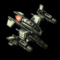
Wraith
- Incredibly powerful with the "Pulse Amplifier" upgrade, but it does require micro.
- Getting the "Advanced Optics" upgrade can make the micro a little simpler to use.
- Very susceptible to splash damage.
- When massed, can 1-shot high-HP targets.
Skills:
| Skill | Name | Description | Cooldown | Energy Cost |
|---|---|---|---|---|
| Cloak | Cloaks the unit, preventing enemy units from seeing or attacking it. A cloaked unit will only be revealed by detectors or effects. Drains 0.9 energy per second. |
0 seconds | 0 |
Upgrades:
| Upgrade | Name | Effect | / |
Research Time |
|---|---|---|---|---|
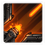 |
Pulse Amplifier | Increases the damage of Gemini Missiles by 100% and Burst Lasers by 300% while the Wraith is moving. | 100/100 | 60 seconds |
| Displacement Field | Wraiths move 20% faster and evade 20% of incoming attacks while cloaked. | 100/100 | 60 seconds | |
| Advanced Optics | Increases the range of all vehicle and ship weapons by 1. | 150/150 | 120 seconds | |
| Regenerative Bio-Steel | Vehicles and ships automatically heal themselves over time. | 150/150 | 90 seconds |
Hercules
- Can Tactical Jump to anywhere on the map, even without vision.
- Load sieged up Siege Tanks to use them offensively.
- When a Hercules dies, it unloads all its units where it died.
Skills:
| Skill | Name | Description | Cooldown | Energy Cost |
|---|---|---|---|---|
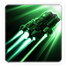 |
Tactical Jump | Warps to the target location. Hercules is invulnerable while warping. | 60 seconds | 0 |
Upgrades:
| Upgrade | Name | Effect | / |
Research Time |
|---|---|---|---|---|
| Regenerative Bio-Steel | Vehicles and ships automatically heal themselves over time. | 150/150 | 90 seconds |
Science Vessel
- A must-have for any composition.
- "Improved Nano-Repair" removes the energy cost of healing your units, which makes it very effective.
- "Defensive Matrix" can be used on frontline units to reduce the amount of damage they take when they engage enemies.
- "Irradiate" can be used against some biological attack waves like Zerg to weaken them.
Skills:
| Skill | Name | Description | Cooldown | Energy Cost |
|---|---|---|---|---|
| Nano-Repair | Heals a friendly mechanical unit. Heals 3 life per 1 energy. |
0 seconds | 0 | |
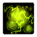 |
Irradiate | Damages an enemy biological unit and adjacent enemy biological units, dealing 250 damage over 25 seconds. | 0 seconds | 25 |
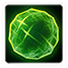 |
Defensive Matrix | Surrounds the target with a shield that can absorb up to 200 damage. Effect lasts for 20 seconds. | 20 seconds | 50 |
Upgrades:
| Upgrade | Name | Effect | / |
Research Time |
|---|---|---|---|---|
| Improved Nano-Repair | Science Vessel's Nano-Repair no longer costs energy. | 100/100 | 60 seconds | |
| Defensive Matrix | Enables Science Vessels to surround a target with a shield that can absorb 200 damage over 20 seconds. | 100/100 | 90 seconds | |
| Regenerative Bio-Steel | Vehicles and ships automatically heal themselves over time. | 150/150 | 90 seconds |
Build Order
Below is the standard economic build order for Swann. For more information on how to read and construct your own build orders, please check the Build Order Theory page.
14 Supply Depot
16 Factory (4 SCV's)
18 Billy (4 SCV's)
18 Billy (4 SCV's)
21 Command Center (8 SCV's)
Gameplay Guide
Playstyle Traps
A common trap for Swann players is to try and rush Thors out in the early game. Not only does it leave them extremely vulnerable to the early game, mass Thors can only work when actually massed in large numbers.
A much better build would be to start with Goliaths backed up with Siege Tanks and then transitioning to Thors as the economy improves.
Drakken Laser Drill Levels
The below table summarizes the Levels available for the Drakken Laser Drill.
| Level | Drill DPS | Unlocked Abilities | / |
Research Time |
|---|---|---|---|---|
| 1 | 20 | None | - | - |
| 2 | 30 | Concentrated Beam | 200/200 | 190 seconds |
| 3 | 50 | Pulse Cannon | 300/300 | 220 seconds |
SCV Advanced Construction
Swann can send multiple SCV's to build a structure. The time taken to complete a structure based on the number of SCV's building is as follows:
| SCV's | Build Time (%) |
|---|---|
| 1 | 100 |
| 2 | 62.5 |
| 3 | 45.5 |
| 4 | 35.7 |
| 5 | 29.4 |
| 6 | 25 |
| 7 | 21.7 |
| 8 | 19.2 |
| 9 | 17.2 |
| 10 | 15.6 |
Static Defense
Swann has a few of static defense structures available to him. These are shown below:
| Building | Name | Stats |
|---|---|---|
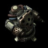 |
Flaming Betty | HP: 350 Attack: 16 (vs Light): 20 Range: 4 Speed: 1 Targets: Ground |
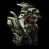 |
Spinning Dizzy | Detector HP: 325 Damage: 12 / 1 Attacks: 2 /8 Range: 7 /7 Speed: 0.86 / 1.78 Targets: Air / Air |
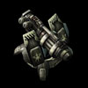 |
Blaster Billy | HP: 300 Attack: 25 (vs Armored): 50 Range: 9 Speed: 1.5 Targets: Ground |
Swann has upgrades that can improve his static defense. The upgrades are listed below:
| Upgrade | Name | Effect | / |
Research Time |
|---|---|---|---|---|
| Hi-Sec Auto Tracking | Adds +1 range to all Turrets. | 100/100 | 60 seconds | |
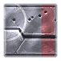 |
Structure Armor | Upgrades the armor of structures by 2. | 100/100 | 60 seconds |
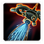 |
Fire Suppression Systems | All structure fires are automatically extinguished and all structures automatically repair themselves to 50% of their maximum life at a rate of 15HP/second. | 100/100 | 60 seconds |
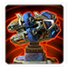 |
KMC Auto-Loaders | Increases the attack speed of all Turrets by 25%. | 150/150 | 90 seconds |
The Drill on Dead of Night
The Drill should be used by Swann to clear infested structures on Dead of Night. Clearing defenders with the Concentrated Beam or Pulse Cannon is just an added bonus. The images below show suggested uses for both, the Concentrated Beam and the Pulse Cannon. Note that the Concentrated Beam here has the bare minimum number of mastery points added to 1-shot infested structures (13 points). You will get better results if you have more mastery points added (for example, if you follow this guide and allocate 19 points).
Also, notice the difference in Concentrated Beam Locations depending on the player. Because the beam exits your Laser Drill, the positioning is different depending on which player you are. Unfortunately, Player 2's Concentrated Beams are significantly less efficient, purely due to the layout of the infested structures relative to the drill.
To get the best positioning consistently, Tactical Jump a Hercules to the location to get vision to perfectly position the beam.
Concentrated Beam Locations (Player 1):
11 Structures
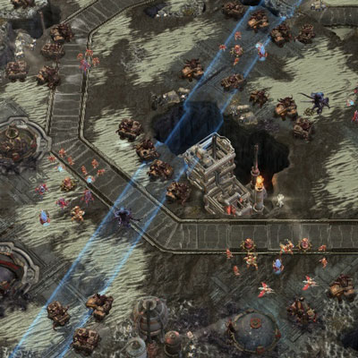
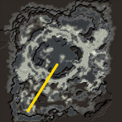
9 Structures
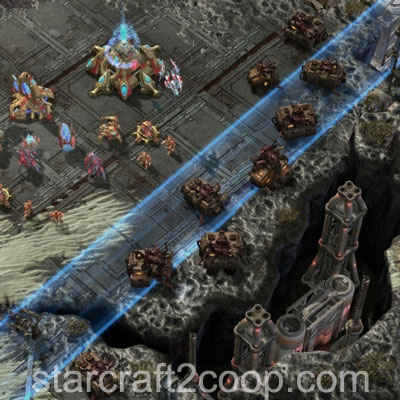
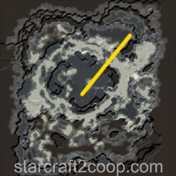
8 Structures
7 Structures
Concentrated Beam Locations (Player 2):
9 Structures
8 Structures
8 Structures
8 Structures
7 Structures
Pulse Cannon Locations:
9 Structures
8 Structures
8 Structures
8 Structures
Playstyle Tips
- Always have enough Science Vessels on hand with your army. Not only do they provide you with detection, they also provide you with access to very useful abilities.
- Upgraded Wraiths only deal high amounts of damage while moving. You will need to practice your stutter-step micro to use them effectively.
- A Hercules can pick up sieged up Siege Tanks. Use it to move weakened and damaged Siege Tanks from the front to the back to prevent you from losing them.
- Siege Tanks unloaded from a Hercules will always point in the direction the Hercules is facing. Orient your Hercules towards your intended target to minimize time it takes for the tank to turn its gun towards its target before firing.
- Raynor can use your Tech Reactors! Make your Tech Reactors with a Factory at your ally's base and then lift your building away so he can use it.
- Use a Hercules to get vision so you can use the Drill to take out attack waves.